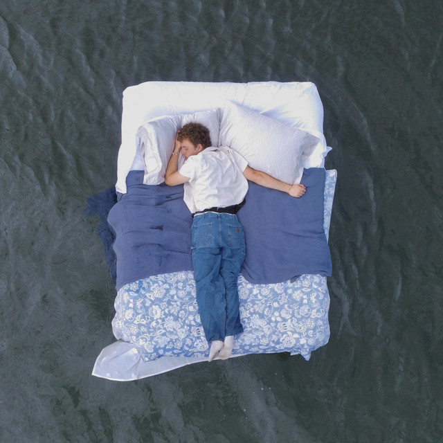

Deeper than it seems
Song by Jace June

I said, you're one and only
You said, you're perfect for me
Would you like anything to drink?
Well that's nice of you
I said, I'm insecure, but
I'll take a glass of water
And you gave me the seven seas
And baby we have a ways to go
But water makes for waterfalls, which tend to overflow
And baby you give me strength and hope
And you just need to know
I love you
All alone in an ocean
Feel my soul, pure devotion
Darlin' you're the only one that takes my breath away
All these waves pull me under
And just like rain before the thunder
Love can get much deeper than it seems
Much deeper than it
You said, I know we're getting close
But I think we should take it slow
I said, I'm here for you no matter what we do
Now you're the tune of everything
We put our love in candy rings
And all our seas have turned from grey to baby blue
But love gets deeper
And candy sweeter
Hear the echoes of love believers
And this whole boat could sink tonight, but I'll go
With all your wishes
And all my kisses
All our troubles are nonexistent
We never thought that we'd be here, but I know
Baby we have a ways to go
But water makes for waterfalls, which tend to overflow
And baby you give me strength and hope
And you just need to know
I love you
All alone in an ocean
Feel my soul, pure devotion
Darlin' you're the only one that takes my breath away
All these waves pull me under
And just like rain before the thunder
Love can get much deeper than it seems
Much deeper than it seems
Oh woah, oh woah
Love can get much deeper than it seems
Oh woah, oh woah
Love can get much deeper than it